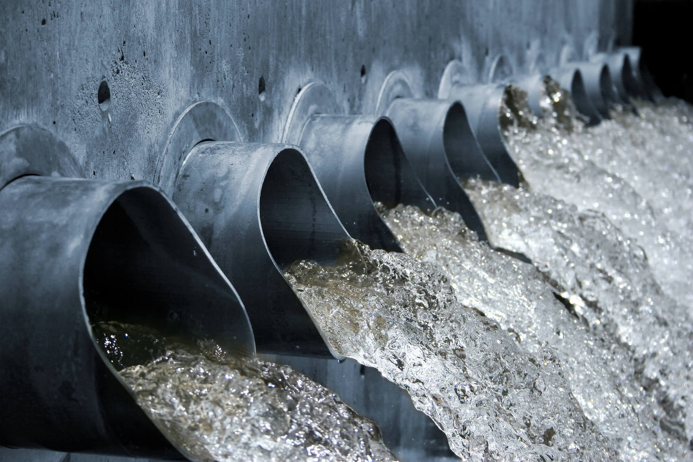
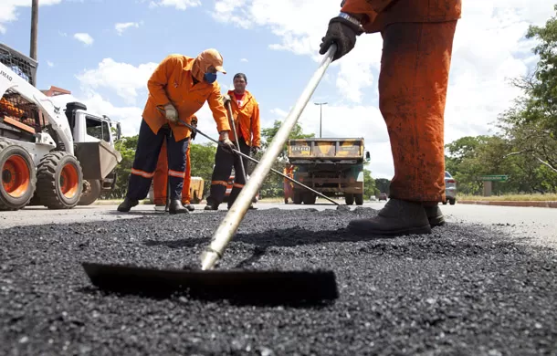
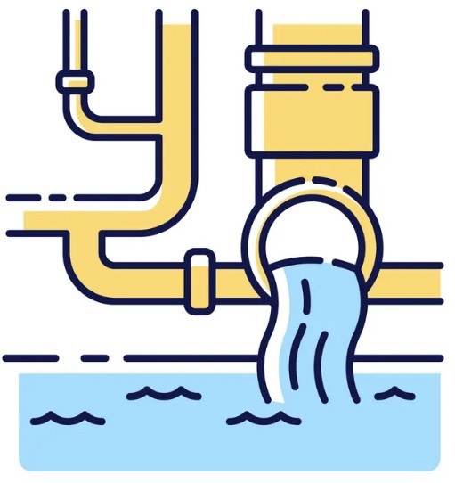
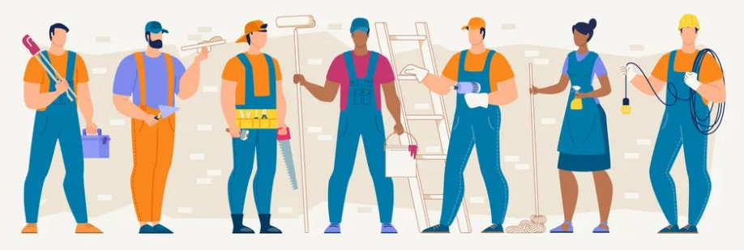

.png)
Acqua Pearl
Entrar em contatoConheça nossos serviços!
Tubulações
Amplamente presentes em diversos tipos de indústrias, como farmacêutica, alimentícia, petroquímica e química, as tubulações são conjuntos de tubos, válvulas e conexões utilizadas para o transporte de fluidos de um ponto a outro em uma planta. Esse sistema é uma medida de saneamento básico que tem por objetivo eliminar materiais grosseiros, como areia e lixo, a matéria orgânica excessiva e outros poluentes do esgoto antes que ele retorne ao meio ambiente, contribuindo, assim, para a preservação dos mananciais.
Limpeza de Rios
Essa técnica consiste em adcionar bolhas de ar ao meio para que as partículas em suspensão no líquido aglutinem-se a essas bolhas. A espuma formada pode então ser removida, arrastando consigo as partículas de impurezas para a superfície, de forma que as partículas sólidas flutuem sobre o rio. Com os rios limpos pessoas que necessitam dele para tomarem banho, lavarem roupa e até mesmo pescar consigam usufruir do rio da melhor forma e segura, pois ele fica totalmente limpo usando a técnica de Flotação.
Tapa-Buracos
O asfalto velho é removido de toda a área ao redor do buraco, e o nós colocamos uma camada de 0,05 metros de preparo de concreto betuminioso usinado a quente(C.B.U.Q) e assim preencher com o novo asfalto. É um serviço bem mais fácil, com um custo e mão de obra menores. O que é operação Tapa-Buraco? O objetivo é recuperar os pontos críticos do pavimento asfáltico já desgatado naturalmente ou danificado por intervenções externas, permitindo assim, que motoristas e pedestre circulem pelo município com mais segurança.
Qual a importância do saneamento básico?
A importância do saneamento básico começa por sua influência na saúde, qualidade de vida e no desenvolvimento da sociedade como um todo. O contato com esgoto e o consumo de água sem tratamento estão ligadas à altas taxas de mortalidade infantil. A principal causa são doenças como parasitoses, diarreias, febre tifoide e leptospirose. As cidades mais desenvolvidas do Brasil e do mundo dão prioridade ao saneamento. Infelizmente isso não é realidade para as localidades mais carentes. Normalmente essa mesma massa populacional também sofre com falta de moradia e renda adequadas. A falta de saneamento básico também pode gerar inúmeros problemas de saúde para a população.
Temos a melhor equipe!
Nossa equipe é composta somente por profissionais da área de saneamento, todos com capacitação técnica e acadêmica, extremamente experientes com anos de carreira na área, contamos com mais de 200 profissinais disponíveis para realização de projetos, sendo eles dividos em 3 equipes : equipe operacional (cuida do tratamento de água e de esgoto); equipe de manutenção (cuida da parte de bombas e do bom funcionamento das redes) e equipe de eletromecânica (cuida da parte mecânica e elétrica).